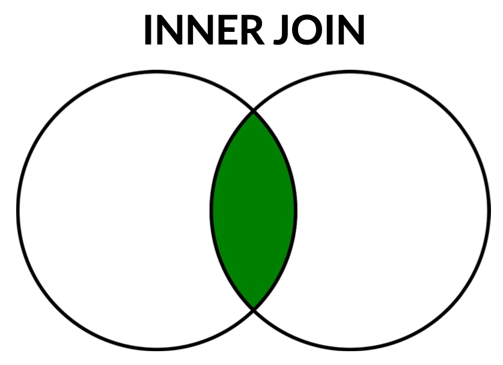
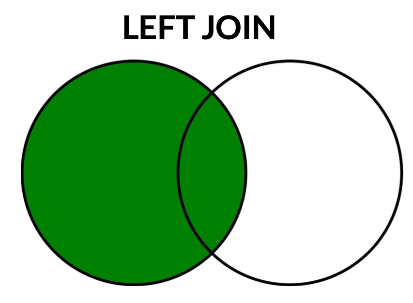
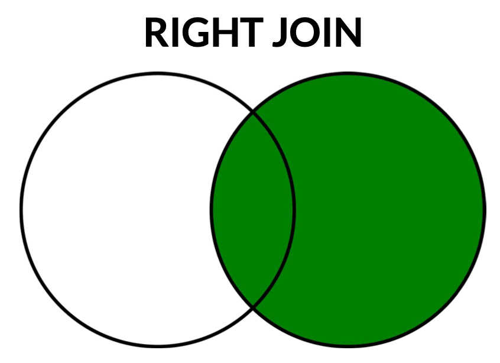
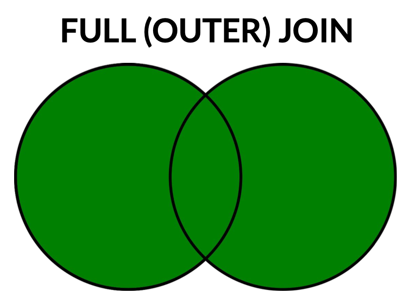

6 Databases
A database is a set of records (generally related to each other) organized and processed by a dedicated management system.
The term database encompasses three concepts: the records, the collections that group the individual records, and the relations that exist both between records of the same collection and between records of different collections.
The dedicated management system is called a database management system (DBMS), whose main functionalities are:
- Create and define data
- Select and query data
- Manipulate and process data
The main differences between management through a file system and through a DBMS:
- With DBMS, operations can take place at the level of the single records, not just whole files.
- The data are no longer “scattered” between different files and directories, but all located within a single entity that also includes the relationships between the data.
- In data analysis, different algorithms applied to the same data set do not require a new copy of the file — it is possible to select a subset of data without replicating it.
6.1 Database Models
In databases we distinguish two aspects:
- Model (or schema): the description of the data and the relations between the various parts of the dataset.
- Instance (or state): the actual content in the database, that is the data.
In general, we distinguish two types of models: relational and non-relational; the former are the standard for structured data, and are also called SQL databases; the latter are typically made for semi-structured and unstructured data, and are referred to as NoSQL (“Not Only SQL”).
6.2 Relational Databases
The foundations of relational databases were laid in 1970 by Edgar F. “Ted” Codd at IBM, in his landmark paper “A Relational Model of Data for Large Shared Data Banks”. Codd proposed organising data into relations (tables) and defined relational algebra — a set of formal operations on those relations, including select (filter rows), project (choose columns), join (combine tables), union, intersection, and difference. Every SQL query can be understood as a composition of these algebraic operations. The most widely used RDBMS today is MySQL, an open source management system.
Relational databases require a predefined schema and are perfectly suited to structured data. The collections of RDBs (Relational DataBases) are tables organized in columns (categories) and rows (individual records).
Three elements are clearly distinguished:
- The records, corresponding to the single rows of the table, also called tuples.
- The attributes, corresponding to the single columns.
- The primary key: a specific attribute (or combination of attributes) that must be unique (different tuples cannot have the same key) and minimal (the minimum number of attributes required to define the key).
To link the various tables, foreign keys are used: attributes or combinations of attributes in one table that act as a primary key in another table.
Each set of operations performed on a relational database is called a transaction, and each must respect four criteria summarized in the acronym ACID:
- Atomicity (all-or-nothing): all operations in a transaction are either performed completely or the entire transaction is aborted.
- Consistency: each transaction must bring a database from a valid state to another valid state, preserving all imposed constraints.
- Isolation: each transaction must generate the same results that would have been obtained in a single-user environment, avoiding conflicts when multiple users act simultaneously.
- Durability: following a transaction, the state of the database must remain the same until it is modified by another transaction.
6.2.1 Transaction Control in SQL
ACID properties are enforced through transactions. SQL provides three transaction control statements:
START TRANSACTION; -- begin a transaction
UPDATE accounts SET balance = balance - 100 WHERE id = 1;
UPDATE accounts SET balance = balance + 100 WHERE id = 2;
COMMIT; -- make changes permanentIf an error occurs, roll back all changes made since START TRANSACTION:
START TRANSACTION;
DELETE FROM Orders WHERE order_date < '2020-01-01';
ROLLBACK; -- undo the DELETESAVEPOINT allows partial rollbacks within a transaction:
START TRANSACTION;
INSERT INTO log VALUES ('step 1');
SAVEPOINT sp1;
INSERT INTO log VALUES ('step 2');
ROLLBACK TO SAVEPOINT sp1; -- undo only step 2
COMMIT; -- commits step 16.2.2 Transaction Isolation Levels
SQL defines four isolation levels that control the trade-off between consistency and concurrency:
| Level | Dirty Read | Non-repeatable Read | Phantom Read |
|---|---|---|---|
READ UNCOMMITTED |
Possible | Possible | Possible |
READ COMMITTED |
Prevented | Possible | Possible |
REPEATABLE READ |
Prevented | Prevented | Possible |
SERIALIZABLE |
Prevented | Prevented | Prevented |
MySQL’s default is REPEATABLE READ. Higher isolation levels reduce anomalies but increase lock contention. Set the level with:
SET TRANSACTION ISOLATION LEVEL REPEATABLE READ;6.3 SQL
The standard language for any DBMS related to relational databases is SQL (pronounced sequel, from the original name SEQUEL — Structured English Query Language — given to it by IBM researchers in 1974). Development at IBM began that year, and SQL was adopted as an ISO/ANSI standard in 1987. The standard has been revised many times since: SQL:1992 added important query features, SQL:1999 introduced recursive queries and triggers, SQL:2003 added window functions and XML support, and SQL:2016 added JSON support, among other revisions.
SQL is a declarative language: what is written describes what must be done, rather than how it should be done. It is structured in three parts:
- DDL (Data Definition Language): defines and modifies the structure of the database.
- DML (Data Manipulation Language): inserts, updates, deletes and queries records.
- DCL (Data Control Language): manages access permissions and security.
6.3.1 Creating Databases and Tables
Each SQL instruction must end with a semicolon.
-- View all databases
SHOW DATABASES;
-- Create a database
CREATE DATABASE IF NOT EXISTS MyDataBase;
-- Select a database to work with
USE MyDataBase;
-- View tables in the current database
SHOW TABLES;
-- Create a table
CREATE TABLE Users (
UserID varchar(30),
BadgeNum int,
FirstName varchar(255),
LastName varchar(255),
Age int,
OtherAttr float
);SQL variable types include: int, float, varchar(n), char(n), date, datetime, boolean, text, and more.
6.3.2 Keys
-- Single-attribute primary key
CREATE TABLE Users (
UserID varchar(30) PRIMARY KEY,
BadgeNum int,
FirstName varchar(255),
LastName varchar(255),
Age int,
OtherAttr float
);
-- Multi-attribute primary key
CREATE TABLE Users (
UserID varchar(30),
BadgeNum int,
FirstName varchar(255),
LastName varchar(255),
Age int,
OtherAttr float,
PRIMARY KEY (UserID, BadgeNum)
);
-- Foreign key
CREATE TABLE Authorizations (
BadgeID int PRIMARY KEY,
Since date,
Level int,
Sector int
);
CREATE TABLE Users (
UserID varchar(30) PRIMARY KEY,
BadgeNum int,
FirstName varchar(255),
LastName varchar(255),
Age int,
OtherAttr float,
FOREIGN KEY (BadgeNum) REFERENCES Authorizations(BadgeID)
);6.3.2.1 AUTO_INCREMENT / SERIAL
When using a simple integer surrogate key, you rarely want to assign IDs manually. The AUTO_INCREMENT attribute (MySQL syntax) tells the database to generate a unique, incrementing integer value automatically whenever a new row is inserted:
CREATE TABLE users (
id INT AUTO_INCREMENT PRIMARY KEY,
name VARCHAR(100)
);Every INSERT that omits id (or passes NULL) receives the next available integer. PostgreSQL uses the SERIAL shorthand (or the standard GENERATED ALWAYS AS IDENTITY) for the same effect.
Do not write PRIMARY KEY next to each individual attribute for a multi-attribute key — SQL will interpret each as a separate primary key and return ERROR 1068 (42000): Multiple primary key defined. Use the PRIMARY KEY (attr1, attr2) syntax at the end of the table definition instead.
6.4 Relationships in Relational Databases
A relational database models relationships between entities. There are three fundamental relationship types, each requiring a different schema design.
The table below summarises the notation commonly used in Entity-Relationship (ER) diagrams alongside the corresponding SQL implementation:
| Relationship | Crow’s foot notation | SQL implementation |
|---|---|---|
| One-to-one (1:1) | \|——\| |
FOREIGN KEY with UNIQUE constraint |
| One-to-many (1:N) | \|——< |
FOREIGN KEY on the “many” side |
| Many-to-many (N:M) | >——< |
Junction/bridge table with two FOREIGN KEYs |
6.4.1 One-to-One (1:1)
Each record in table A corresponds to at most one record in table B. The Foreign Key is placed on either side, but must have a UNIQUE constraint to enforce the 1:1 cardinality.
Example — Student ↔︎ Thesis: each student has at most one thesis.
CREATE TABLE Students (
student_id INT PRIMARY KEY,
name VARCHAR(100) NOT NULL,
email VARCHAR(100)
);
CREATE TABLE Theses (
thesis_id INT PRIMARY KEY,
title VARCHAR(200) NOT NULL,
student_id INT UNIQUE, -- UNIQUE enforces 1:1
FOREIGN KEY (student_id) REFERENCES Students(student_id)
);6.4.2 One-to-Many (1:N)
Each record in table A (the “one” side) corresponds to many records in table B (the “many” side). The Foreign Key must be placed on the “many” side — never on the “one” side.
Example — Course ↔︎ Lectures: one course has many lectures.
CREATE TABLE Courses (
course_id INT PRIMARY KEY,
name VARCHAR(100) NOT NULL
);
CREATE TABLE Lectures (
lecture_id INT PRIMARY KEY,
title VARCHAR(200) NOT NULL,
course_id INT, -- FK on the "many" side
FOREIGN KEY (course_id) REFERENCES Courses(course_id)
);Placing the FK on the “one” side (e.g., storing a list of lecture IDs inside the Course row) violates First Normal Form and is not possible in standard SQL. The FK always belongs on the table that can have multiple records per parent.
6.4.3 Many-to-Many (N:M)
Records in table A can relate to many records in table B and vice versa. SQL cannot express this directly with a single FK — a junction table (also called association or bridge table) is required.
Example — Student ↔︎ Course: students enrol in many courses; each course has many students.
CREATE TABLE Enrollments (
student_id INT NOT NULL,
course_id INT NOT NULL,
enrollment_date DATE,
PRIMARY KEY (student_id, course_id), -- composite PK ensures uniqueness
FOREIGN KEY (student_id) REFERENCES Students(student_id),
FOREIGN KEY (course_id) REFERENCES Courses(course_id)
);The composite Primary Key (student_id, course_id) guarantees that a student cannot be enrolled in the same course twice, and the combination is the minimal unique identifier for each enrolment record.
6.4.4 Constraints
Constraints are keywords written after the variable type:
UNIQUE: each value in the column must be unique.NOT NULL: no NULL values allowed.DEFAULT <value>: sets a default value when none is provided.CHECK (<condition>): returns an error if the condition is not respected.
CREATE TABLE Users (
UserID varchar(30) PRIMARY KEY,
BadgeNum int NOT NULL UNIQUE,
FirstName varchar(255) NOT NULL DEFAULT '',
LastName varchar(255) NOT NULL DEFAULT '',
Age int DEFAULT 18,
OtherAttr float CHECK (OtherAttr > 0)
);To inspect a table’s structure:
DESCRIBE Users;| Field | Type | Null | Key | Default | Extra |
|---|---|---|---|---|---|
| UserID | varchar(30) | NO | PRI | NULL | |
| BadgeNum | int | NO | UNI | NULL | |
| FirstName | varchar(255) | NO | |||
| LastName | varchar(255) | NO | |||
| Age | int | YES | 18 | ||
| OtherAttr | float | YES | NULL |
6.4.5 Altering Tables
Altering a table’s structure involves all the records present in it. This is one of the main challenges in working with relational databases — maintaining consistency is critical (a process called database normalization).
-- Add a column
ALTER TABLE Users
ADD COLUMN Role char(1) DEFAULT 'A' CHECK (Role IN ('A','B','C'));
-- Change default value
ALTER TABLE Users
ALTER Role SET DEFAULT 'B';
-- Add a constraint (redefines the attribute)
ALTER TABLE Users
MODIFY Role char(1) NOT NULL;
-- Add a primary key after creation
ALTER TABLE AddressBook
ADD PRIMARY KEY (TelephoneNumber, User);
-- Add a foreign key
ALTER TABLE AddressBook
ADD CONSTRAINT FK_user
FOREIGN KEY (User) REFERENCES Users(UserID);
-- Remove a constraint
ALTER TABLE AddressBook
DROP CONSTRAINT FK_user;
-- View table creation info
SHOW CREATE TABLE AddressBook;
-- Drop a column
ALTER TABLE Users
DROP COLUMN Role;
-- Drop a table
DROP TABLE IF EXISTS Users;Dropping a table deletes all records within it and all foreign key connections to other tables, potentially making the entire database unusable. Use with caution.
6.4.6 Data Insertion
INSERT INTO Users (UserID, BadgeNum, FirstName, LastName, OtherAttr)
VALUES ('usr:00001', 100, 'Rei', 'Ayanami', 1.8);
-- Multiple records at once
INSERT INTO Users (UserID, BadgeNum, FirstName, LastName, OtherAttr)
VALUES
('usr:00002', 101, 'Asuka', 'Soryu Langley', 3.5),
('usr:00003', 102, 'Shinji', 'Ikari', 2.9),
('usr:00004', 103, 'Toji', 'Suzuhara', 4.7),
('usr:00005', 104, 'Kaworu', 'Nagisa', 3.0);6.4.7 Modifying Records
UPDATE Users
SET Role = 'C'
WHERE (LastName = 'Ayanami');Wildcards extend WHERE conditions for strings: _ is a char wildcard (any single character) and % is a string wildcard (any sequence of characters). They are used with LIKE:
-- All records where FirstName contains 'o'
UPDATE Users
SET Role = 'B'
WHERE (FirstName LIKE '%o%');
-- All records where the third character of FirstName is 'i'
UPDATE Users
SET OtherAttr = 5.0
WHERE (FirstName LIKE '__i%');6.4.8 Deleting Records
DELETE FROM Users
WHERE (LastName LIKE '%p_');6.4.9 Conditional Expressions: CASE
The CASE expression evaluates conditions row-by-row and returns a value, similar to an if-else chain:
SELECT name,
salary,
CASE
WHEN salary < 30000 THEN 'Low'
WHEN salary < 70000 THEN 'Medium'
ELSE 'High'
END AS salary_band
FROM Employees;CASE can also be used in ORDER BY, GROUP BY, and aggregate functions.
6.4.10 Data Selection
Although you write SELECT first, the database executes the clauses in this order:
| Step | Clause | What it does |
|---|---|---|
| 1 | FROM / JOIN |
Identify the source tables and combine them |
| 2 | WHERE |
Filter rows before grouping |
| 3 | GROUP BY |
Group the filtered rows |
| 4 | HAVING |
Filter groups (like WHERE but on aggregate results) |
| 5 | SELECT |
Evaluate expressions and select columns |
| 6 | ORDER BY |
Sort the result |
| 7 | LIMIT / OFFSET |
Restrict the number of returned rows |
This order explains why you cannot use a column alias defined in SELECT inside a WHERE clause — WHERE is evaluated before SELECT.
The SELECT command is the most powerful and widely used in SQL, enabling the extraction of records according to conditions specified by the user — the so-called queries.
-- View entire table
SELECT * FROM Users;
-- Limit displayed records
SELECT * FROM Users
LIMIT 3;
-- Select specific attributes
SELECT FirstName, BadgeNum FROM Users;
-- Distinct values (no repetitions)
SELECT DISTINCT FirstName FROM Users;
-- Sort (ascending by default; DESC for descending)
SELECT FirstName FROM Users
ORDER BY FirstName;
-- Filter with WHERE
SELECT FirstName, BadgeNum FROM Users
WHERE (OtherAttr > 0);
-- Create a VIEW
CREATE VIEW OneThree AS
SELECT UserID, BadgeNum, LastName
FROM Users
WHERE (OtherAttr BETWEEN 1 AND 3);
SELECT * FROM OneThree;
SHOW CREATE VIEW OneThree;
-- Mathematical operations on attributes
SELECT OtherAttr * 2, POWER(BadgeNum, 2) FROM Users
WHERE (OtherAttr > 1.8);Built-in aggregate functions: COUNT(), MAX(), MIN(), SUM(), AVG().
Aliases for attributes and tables:
SELECT DISTINCT FirstName AS UniqueNames
FROM Users;
-- AS can be omitted
SELECT FirstName NamesEndingI
FROM Users U
WHERE (FirstName LIKE '%i');GROUP BY and HAVING:
SELECT FromCountry, COUNT(DISTINCT FromCity) TotalCities
FROM Ships
GROUP BY FromCountry
ORDER BY TotalCities DESC;
-- HAVING filters on aggregated results
SELECT FromCountry, COUNT(DISTINCT FromCity) TotalCities
FROM Ships
GROUP BY FromCountry
HAVING TotalCities > 1
ORDER BY TotalCities DESC;An implicit join uses a comma-separated FROM clause and a WHERE condition to filter the result:
SELECT c.name, o.total
FROM Customers c, Orders o
WHERE c.customer_id = o.customer_id;This is equivalent to an explicit INNER JOIN, but the database engine first computes the full Cartesian product (every row of Customers × every row of Orders) and then filters. For large tables this is highly inefficient and easy to make incorrect by forgetting the WHERE condition. Always prefer explicit JOIN ... ON syntax.
JOINs combine tables through matching attribute values:
-- INNER JOIN: only records with matching keys in both tables
SELECT s.FromCountry, o.Name, s.Rate
FROM Ships s
INNER JOIN Orders o ON s.Code = o.Code;
-- LEFT JOIN: all records from the left table; NULLs for non-matching right records
SELECT s.FromCountry, o.Name, s.Rate
FROM Ships s
LEFT JOIN Orders o ON s.Code = o.Code;
-- RIGHT JOIN: all records from the right table; NULLs for non-matching left records
SELECT s.FromCountry, o.Name, s.Rate
FROM Ships s
RIGHT JOIN Orders o ON s.Code = o.Code;
-- FULL (OUTER) JOIN: all records from both tables; NULLs where no match
SELECT s.FromCountry, o.Name, s.Rate
FROM Ships s
LEFT JOIN Orders o ON s.Code = o.Code
UNION
SELECT s.FromCountry, o.Name, s.Rate
FROM Ships s
RIGHT JOIN Orders o ON s.Code = o.Code;



Graphic illustration of the join processes
6.4.11 Other JOIN Types
| JOIN Type | Description |
|---|---|
| CROSS JOIN | Returns the Cartesian product of two tables — every combination of rows. No ON condition. Rarely used directly; equivalent to implicit join without a WHERE clause. |
| SELF JOIN | Joins a table to itself. Useful for hierarchical data (e.g. an employee table with a manager_id column referencing the same table). |
| NATURAL JOIN | Automatically joins on all columns that share the same name and data type in both tables. No ON clause is written — the database infers the join condition. |
-- CROSS JOIN example
SELECT a.colour, b.size FROM Colours a CROSS JOIN Sizes b;
-- SELF JOIN example (employees and their managers)
SELECT e.name AS employee, m.name AS manager
FROM Employees e
LEFT JOIN Employees m ON e.manager_id = m.employee_id;
-- NATURAL JOIN example
SELECT * FROM orders NATURAL JOIN customers;NATURAL JOIN infers its join condition from column names at query time. If either table later gains a new column that happens to share a name with a column in the other table, the join condition silently changes — the query continues to run but returns different (wrong) results with no error or warning. For this reason, explicit JOIN ... ON clauses are strongly preferred in any production or long-lived code.
6.5 Subqueries
A subquery (or nested query) is a SELECT statement embedded inside another SQL statement. Subqueries can appear in the WHERE, FROM, or SELECT clauses.
-- Find customers who have placed at least one order over €1000
SELECT customer_name
FROM Customers
WHERE customer_id IN (
SELECT customer_id
FROM Orders
WHERE total > 1000
);Subqueries can also use ANY or ALL:
-- Products more expensive than ALL products in category 5
SELECT name FROM Products
WHERE price > ALL (SELECT price FROM Products WHERE category_id = 5);When possible, rewrite correlated subqueries as explicit JOINs — a well-optimised JOIN is typically faster because the planner can choose the join algorithm. Subqueries that are executed once per row of the outer query (“correlated subqueries”) can be very slow on large tables.
6.5.1 Data Control (DCL)
The DCL (Data Control Language) manages access to databases, user permissions and data security.
-- Create a user
CREATE USER 'new_user'@'localhost'
IDENTIFIED BY 'new_password';
-- Grant privileges
GRANT SELECT, UPDATE ON Orders.Name TO 'new_user'@'localhost';
-- Revoke privileges
REVOKE UPDATE ON Orders.Name FROM 'new_user'@'localhost';6.6 Exercises
6.6.1 Conceptual Questions
Explain the difference between the database schema and a database instance. Give an example to illustrate the distinction.
Solution. The database schema is how the data is organized, it affects the structure and the dataset and can constrain the values of the data is stored. An instance is the data itself that follows the schema. We could see it as a praty with a dress code, the organizers set the dress code and ensures everyone follows (the schema), each person in the party follows those rules (each person is an instance) and if they don’t follow it they can not attend.
Compare file system-based data management with database management systems. What are the main advantages of using a DBMS over raw file storage?
Solution. In file systems you can not impose rules to the data, they can store more data but there is no control about what is being stored, in DBMS you can store less data, but you can control what is stored and you can access the data directly by applying filters. The main advantage is that you have the fixed schema that ensures the data has the proper format and you can search and make operations directly in the data.
What is a primary key and why is it important? Can a table have more than one primary key? What properties must a primary key satisfy?
Solution. A primary key is an attribute (or set of attributes) that uniquely identifies each row of a table.
A table has exactly one primary key. It can be composite (made of several columns), but there is only one PK per table. Other column-sets that could also serve as a unique identifier are called candidate keys; the DBA picks one and promotes it to PK.
Properties a PK must satisfy: uniqueness, non-null, minimality (no proper subset is itself unique) and stability (the value should not change over the row’s lifetime).
What is a foreign key? Provide a concrete example showing a foreign key relationship between two tables.
Solution. A foreign key is a key that is related to another table and can be used to link tables, the key that relates to needs to be a primary key of the other table. For example in a table named Cities we have information of each city in a country and there is a Country_Code key and in another table named Country we have the information at the Country level, and there is a Code key. In this case Country_code is a foreign key in the Cities table so now both are linked and we can get the information of each city in a country.
What is the meaning of DDL (Data Definition Language) and DML (Data Manipulation Language) in SQL? Provide at least one example statement for each category.
Solution.
- DDL defines or modifies the schema — the structure of the database. Examples:
CREATE TABLE,ALTER TABLE,DROP TABLE,CREATE INDEX. - DML manipulates the data inside existing tables. Examples:
INSERT INTO,UPDATE,DELETE, and (in some texts)SELECT— thoughSELECTis sometimes split off into a separate DQL (Data Query Language) category.
Briefly explain the difference between ALTER and UPDATE in SQL. When would you use each?
Solution. The ALTER statements is used when you want to alter the tables schema, the UPDATE statement is used when you want to update the records in the table.
Briefly explain the difference between the DELETE and DROP statements in SQL. What are the consequences of each?
Solution. The DELETE statements is used to delete specific records and the DROP statements is used to delete the table from the schema, so the entire atble is erased from the DBMS and all that dta is lost. A DELETE statement with a weak WHERE condition can have the same effect but it wont lose the schema of the table
What are the CRUD operations and their corresponding SQL commands? Provide a simple example for each command.
Solution. CRUD = Create, Read, Update, Delete — the four basic operations on persistent data.
-- Create
INSERT INTO Students (FirstName, LastName, Email)
VALUES ('Ada', 'Lovelace', 'ada@example.com');
-- Read
SELECT * FROM Students WHERE LastName = 'Lovelace';
-- Update
UPDATE Students SET Email = 'ada.l@example.com' WHERE BadgeID = 1;
-- Delete
DELETE FROM Students WHERE BadgeID = 1;Why is it important to avoid storing all records in a single table in relational databases, and why should databases be normalised across multiple tables? What problems does normalisation solve?
Solution. A single fat table duplicates information and creates three classes of anomalies:
- Update anomaly. Changing one fact (e.g. a course’s name) requires updating every row that mentions it; missing one row leaves the data inconsistent.
- Insertion anomaly. Cannot insert a course until at least one student is enrolled (or vice versa) without nullable filler columns.
- Deletion anomaly. Removing the last student of a course also erases the course itself.
Normalisation (1NF → 2NF → 3NF → BCNF) splits the data into linked tables so each fact lives in exactly one place, joined back at query time via foreign keys.
6.6.2 ACID Questions
What is Atomicity in the ACID model? Provide an example of a database transaction where atomicity is critical.
Solution. Atomicity means a transaction is all-or-nothing: either every statement succeeds and the result is committed, or none of them take effect (rollback).
Bank transfer example. Moving $100 from account A to account B requires two updates: A -= 100 and B += 100. If the system crashes between them and atomicity is not enforced, money disappears (debit applied, credit lost) or is created (credit applied, debit lost). Atomicity guarantees the pair either both happen or both do not.
What does “I” (Isolation) refer to in the ACID database transaction model? Describe a scenario where insufficient isolation causes a data integrity problem.
Solution. Isolation means concurrent transactions do not see each other’s intermediate state — each runs as if it were alone on the database. Without it, anomalies appear: dirty reads, lost updates, non-repeatable reads, phantoms.
Lost-update example. Two cashiers process refunds against an account with balance 100.
- Cashier 1 reads balance \(=100\).
- Cashier 2 reads balance \(=100\).
- Cashier 1 writes \(100 - 30 = 70\).
- Cashier 2 writes \(100 - 20 = 80\).
Both refunds happened but only one was deducted. Proper isolation (serializable or row-level locking) forces the second read to wait, giving the correct final balance \(50\).
What is the meaning of Durability in the ACID model? How does ACID Durability compare to the approach taken by BASE models?
Solution. Durability means that once a transaction has been acknowledged as committed, the result survives any subsequent crash — power loss, OS panic, hardware failure. It is enforced via write-ahead logs (WAL) and fsync of the log to non-volatile storage before the commit returns.
BASE (Basically Available, Soft state, Eventual consistency) is the NoSQL counterpart that explicitly relaxes ACID for horizontal scale: writes may be acknowledged after being stored on only a subset of replicas, soft state may evolve in the background, and the system promises only that replicas will eventually converge. Durability is weakened in exchange for higher availability and throughput.
6.6.3 Schema Design Exercises
The University is preparing a database to store all Students and Courses.
- Each Course can be attended by multiple Students.
- Each Student can be enrolled in multiple Courses.
Students table:
BadgeID (INT, AUTO_INCREMENT, PK),
FirstName (VARCHAR(30), NOT NULL),
LastName (VARCHAR(30), NOT NULL),
Email (VARCHAR(30), NOT NULL).Courses table:
CourseID (CHAR(10), UNIQUE NOT NULL, PK),
CourseName (VARCHAR(255), NOT NULL),
Degree (VARCHAR(30), NOT NULL),
B_or_M (CHAR(1),
CHECK (B_or_M IN ('B','M'))).Given this schema, what modifications are necessary (new tables, constraints, etc.) to relate the Students and Courses tables? If creating a new table, identify its Primary and Foreign Keys.
Solution. A many-to-many relationship requires a junction (associative) table linking the two existing primary keys. (The schema below is illustrative — not a real University database.)
CREATE TABLE Enrollments (
BadgeID INT NOT NULL,
CourseID CHAR(10) NOT NULL,
Year INT NOT NULL,
Grade DECIMAL(3,1),
-- Composite primary key: a student can take the same course in
-- different academic years, so the year is part of the PK.
PRIMARY KEY (BadgeID, CourseID, Year),
FOREIGN KEY (BadgeID) REFERENCES Students(BadgeID)
ON DELETE CASCADE,
FOREIGN KEY (CourseID) REFERENCES Courses(CourseID)
ON DELETE CASCADE
);- Primary key: composite
(BadgeID, CourseID, Year). - Foreign keys:
BadgeID → Students(BadgeID)andCourseID → Courses(CourseID). - Optional payload columns on the link (e.g.
Grade,Year) capture facts that belong to the pair, not to a student or a course alone.
A library is preparing a relational database to manage all Books and Authors.
- Each Author can write multiple Books.
- Each Book can have multiple Authors.
What modifications are necessary to relate the Books and Authors tables? If creating a new table, what are the Primary and Foreign Keys of that table?
Solution. Same many-to-many pattern as the University case — add a junction table. (Hypothetical schema, not a real library database.)
CREATE TABLE Authors (
AuthorID INT AUTO_INCREMENT PRIMARY KEY,
Name VARCHAR(100) NOT NULL
);
CREATE TABLE Books (
ISBN CHAR(13) PRIMARY KEY,
Title VARCHAR(255) NOT NULL,
PubYear INT
);
CREATE TABLE BookAuthors (
ISBN CHAR(13) NOT NULL,
AuthorID INT NOT NULL,
PRIMARY KEY (ISBN, AuthorID),
FOREIGN KEY (ISBN) REFERENCES Books(ISBN)
ON DELETE CASCADE,
FOREIGN KEY (AuthorID) REFERENCES Authors(AuthorID)
ON DELETE CASCADE
);- PK of
BookAuthors: composite(ISBN, AuthorID). - FKs:
ISBN → Books(ISBN),AuthorID → Authors(AuthorID).
A Twitter user can follow multiple people. How must the User table relate to the Follows table? Write the SQL statement to alter the Follows table to define the attributes that constitute the primary and foreign keys.
Solution. Follows is a self-referencing many-to-many link on Users: both the follower and the followee are users. (Sample schema, not the real Twitter one.)
CREATE TABLE Users (
UserID INT AUTO_INCREMENT PRIMARY KEY,
Handle VARCHAR(30) UNIQUE NOT NULL
);
-- Assume Follows(FollowerID, FolloweeID) already exists.
ALTER TABLE Follows
ADD CONSTRAINT pk_follows
PRIMARY KEY (FollowerID, FolloweeID),
ADD CONSTRAINT fk_follower
FOREIGN KEY (FollowerID) REFERENCES Users(UserID)
ON DELETE CASCADE,
ADD CONSTRAINT fk_followee
FOREIGN KEY (FolloweeID) REFERENCES Users(UserID)
ON DELETE CASCADE,
ADD CONSTRAINT chk_no_self_follow
CHECK (FollowerID <> FolloweeID);- PK of
Follows: composite(FollowerID, FolloweeID)— each directed follow relationship is unique. - FKs: both columns reference
Users(UserID). - The
CHECKprevents users from following themselves.
How do you implement a many-to-many relationship between two existing SQL tables, Actors and Plays? Write the SQL statements required to create the necessary structure.
Solution. Create a junction table whose primary key is the composite of the two foreign keys. (Illustrative schema, not a real one.)
-- Existing tables (sketched here for context):
CREATE TABLE Actors (
ActorID INT AUTO_INCREMENT PRIMARY KEY,
Name VARCHAR(100) NOT NULL
);
CREATE TABLE Plays (
PlayID INT AUTO_INCREMENT PRIMARY KEY,
Title VARCHAR(255) NOT NULL,
Year INT
);
-- Junction table linking them:
CREATE TABLE ActorPlays (
ActorID INT NOT NULL,
PlayID INT NOT NULL,
Role VARCHAR(100),
PRIMARY KEY (ActorID, PlayID),
FOREIGN KEY (ActorID) REFERENCES Actors(ActorID)
ON DELETE CASCADE,
FOREIGN KEY (PlayID) REFERENCES Plays(PlayID)
ON DELETE CASCADE
);The optional Role column on the link captures information that belongs to the pair (the actor played a specific role in that play), not to the actor or the play individually.